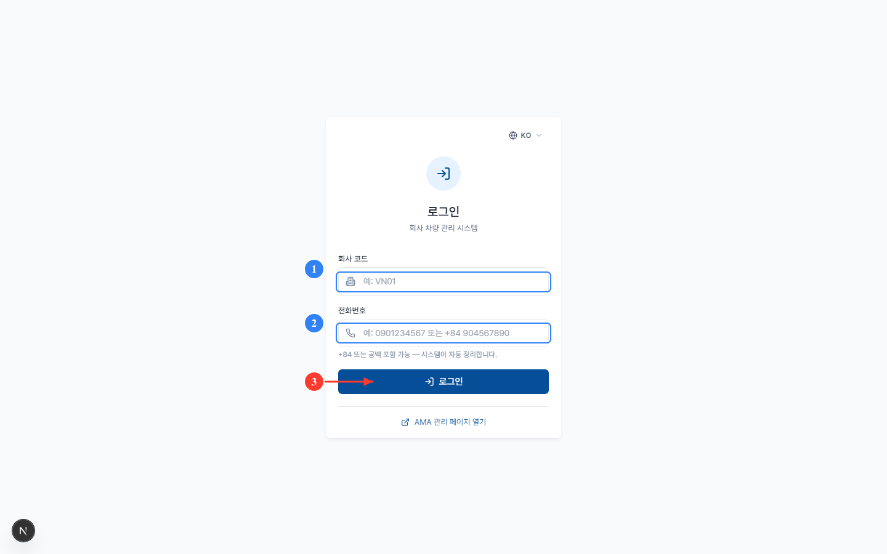
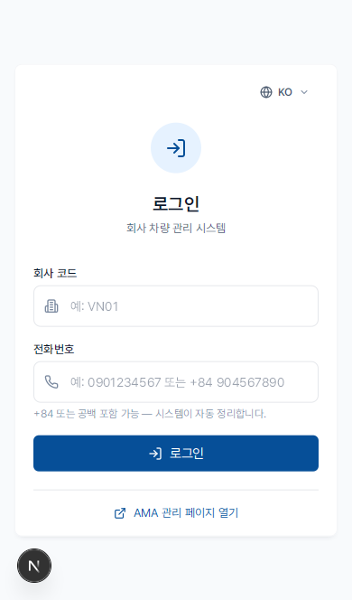

시스템 로그인
- 대상
- 모든 역할
- 사전 조건
- 회사 관리자가 앱 사용 권한을 부여한 Amoeba 계정 (ama.amoeba.site)
- 소요 시간
- 약 30초
방법 1 — Amoeba 싱글 사인온 (권장)
일반 사용자를 위한 표준 방식입니다. ama.amoeba.site에 한 번 로그인하면 비밀번호 재입력 없이 앱에 접근할 수 있습니다.
1
브라우저에서 https://ama.amoeba.site를 열고 Amoeba 이메일·비밀번호로 로그인합니다.
2
Amoeba 홈에서 "내 앱" 영역의 Car Manager 아이콘을 클릭합니다.
3
시스템이 역할에 맞는 홈 화면으로 자동 이동시킵니다:
- 관리자 / 매니저 → 대시보드
- 기사 → 오늘 화면
ℹ️
세션 유효 시간은 8시간입니다. 이후에는 자동 로그아웃되며 Amoeba에서 다시 로그인해야 합니다.
방법 2 — 직접 로그인 페이지
Amoeba 세션 없이 앱 URL에 직접 접근하면 앱 자체 로그인 화면이 표시됩니다:


1
회사 코드(대문자, 관리자로부터 받음)를 입력합니다.
2
Amoeba에 등록된 전화번호를 국제 형식으로 입력합니다 (+84 90 123 4567).
3
로그인을 클릭. 시스템이 인증 후 역할별 홈으로 이동시킵니다.
⚠️
회사 코드나 전화번호가 기억나지 않으면 개발팀이 아닌 회사 관리자에게 확인하세요.
자주 발생하는 문제
| 증상 | 원인 | 해결 |
|---|---|---|
| "세션 만료" 메시지 | Amoeba 세션이 8시간을 초과 | Amoeba에 다시 로그인 후 앱 아이콘 클릭 |
| "접근 권한 없음" 알림 | 관리자가 앱 사용 권한을 아직 부여하지 않음 | 관리자에게 권한 요청 |
| "회사를 찾을 수 없음" | 회사 코드 오류 | 관리자에게 코드 재확인 |
| 로그인 성공했으나 사이드바가 비어있음 | AMA 역할이 앱 역할로 매핑되지 않음 | dev@amoeba.group에 문의 |